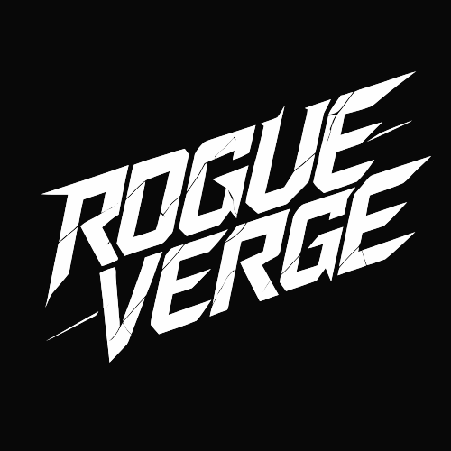
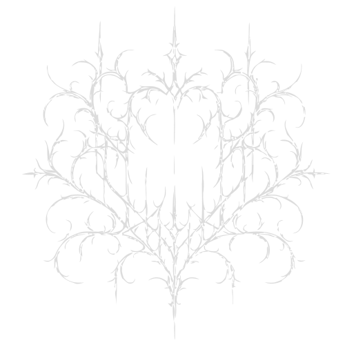

CLI 與 AI HTML 實作班
清大經濟 · 自學程式 · 用 AI 做出真實產品
我的個人服飾品牌。從品牌策略到視覺設計，由我定方向，AI 負責執行。


Midjourney · AI Design · Claude Code · React + GSAP
為家族企業從零建置的官方網站。
WebGL 流體游標、GLSL 極光著色器、3D 粒子球 — 全程以 AI 協作完成。
WebGL 即時流體模擬，跟著滑鼠走
GLSL shader 極光 + 粒子球輪播
完整國際化 + 語系路由切換
即時 DB + Auth + 郵件通知
React 19 · TypeScript · Tailwind · Three.js · GSAP · Framer Motion
上一頁是 LetterGlitch 亂碼矩陣，這頁是 Aurora 極光著色器。
兩種截然不同的 Canvas 動畫，都是描述視覺方向後由 AI 實現的。
今天這堂課的核心，就是學會如何有效地指揮 AI 完成工作。
點任一張卡，看同一件事在「過去」和「現在」怎麼做
害怕？看不懂？不知道打什麼？
很正常。每一個工程師一開始都這樣。
你要知道 AI 把檔案放在哪裡、怎麼打開成果
今天只學做出 HTML 會用到的幾個指令
最後會有一個本機 index.html，瀏覽器打開就看得到
不再被工具限制 — 你告訴電腦做什麼，不是反過來
命令列不是工程師的專利。
它是一種跟電腦溝通的方式。今天只用它完成一件事：找到並打開你的網頁。
建 my-page，做出 index.html，瀏覽器打開看到成果
用更清楚的指令，把頁面改成像作品
自由修改、本機展示；Git 只做 demo，不公開網址
每個指令自己打一遍，手會記得
命令列錯誤不會弄壞電腦。最壞就是重開終端機
任何指令看不懂就問，不會有人笑你
投影片會同時標示兩邊的指令
看到 Hello, CLI! 就代表成功了。
命令列只是一種語言。你已經會說中文了，
學另一種跟電腦說話的方式而已。
09:30 — CLI 基礎